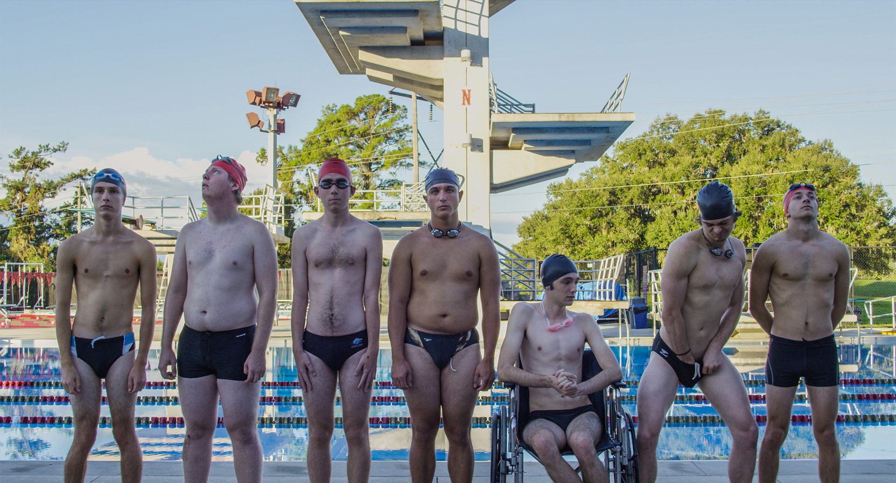
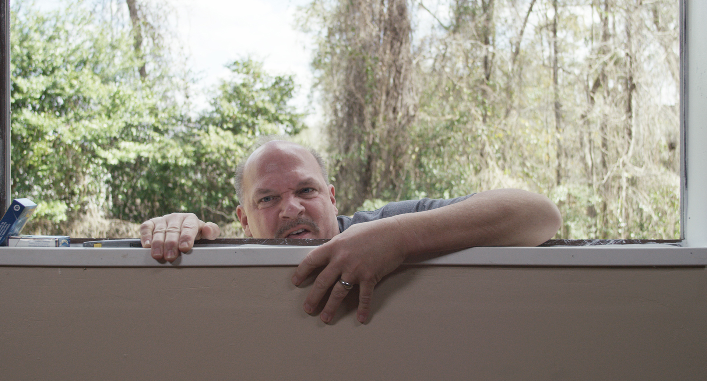
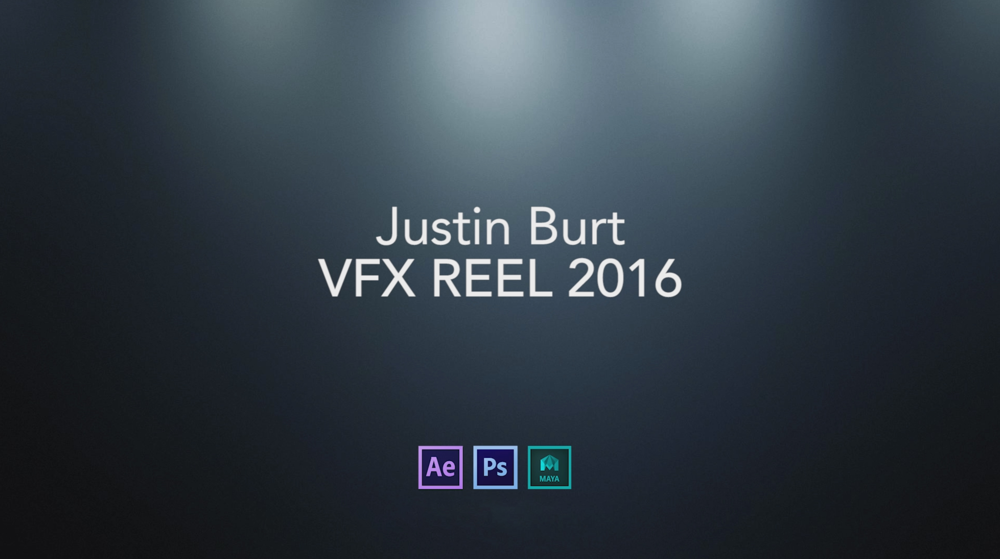
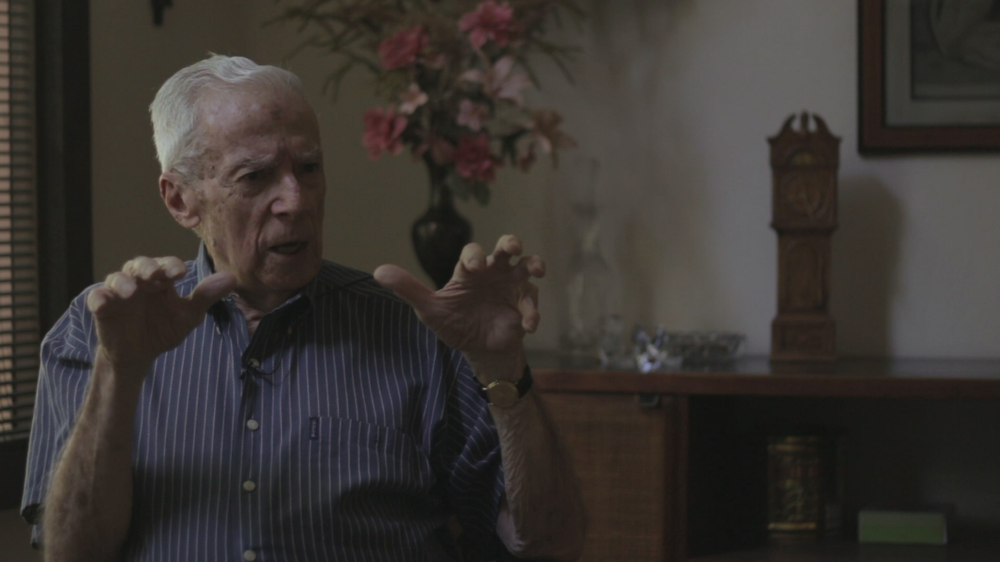
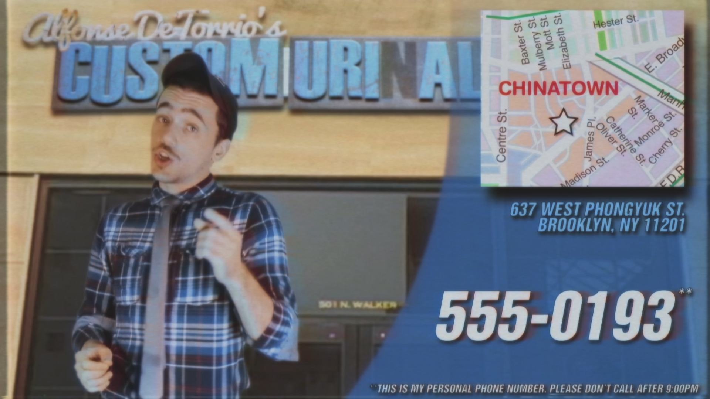
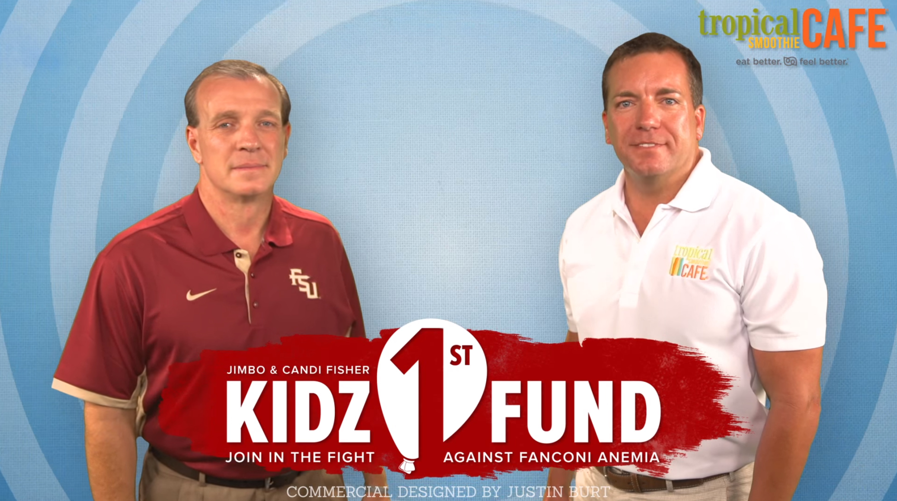
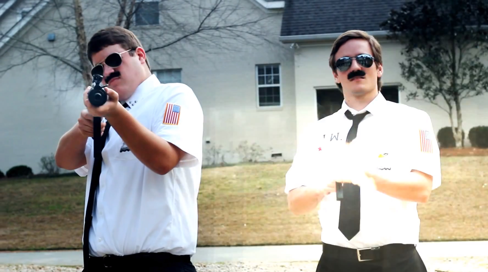

Hi, I'm Justin.
A proud graduate of Florida State University College of Motion Picture Arts, I have spent my career specializing in the creative and technical development of visual effects. My experience as both a visual effects artist and coordinator working in the fast-paced world of network television has provided me with the skills and tenacity necessary to adapt to a variety of projects and environments. I am currently working full time for Warner Bros Television in sunny Burbank, California on DC's Legends of Tomorrow season four.
VFX GENERALIST/PREVIS REEL (2019)
Watch on Vimeo

SINK OR SWIM (2017)
Northwood High School is in for a throwdown of epic proportions when the swim team's Head Coach, Donny Burkhardt - a man with a big heart and a small budget - finally loses his cool after discovering that his ragtag team of less than spectacular swimmers is being picked on by the school’s highly respected yet truly maniacal baseball coach, Bud Crawford. Written/Directed by Justin Burt. TRAILER

FOR THE RECORD (2016)
After convincing two young boys to help him break into the dirty trailer of a dangerous meth-cooking psychopath, a friendly yokel must decide whether stealing back his most prized rock and roll album from the crazed and enraged meth-head is more important than the lives of the two bewildered boys caught in the middle of his mess. Written/Directed by Justin Burt.

VFX GENERALIST REEL (2016)
Watch on Vimeo

PLANTADO (2015)
In 1962, Jose Pujals Mederos - a Cuban patriot and devoted family man - was sentenced to death by Fidel Castro's communist regime for his political opposition to the newly established totalitarian government. Fifty-three years later, Jose shares the incredibly powerful story of his horrible mistreatment and miraculous journey home with a group of young filmmakers, imparting upon them the lessons he learned as a Plantado - an uncompromising symbol of freedom and devotion. Directed by Justin Burt. TRAILER

ALFONSE DETORRIO'S CUSTOM URINAL CAKE OUTLET (2015)
Watch on YouTube
MURICAN' MECH SUIT (2015)
Watch on YouTube
BREAKING BAD TITLE REBUILD (2013)
Watch on YouTube
BAD DOG (2014)
After his girlfriend is murdered by his dog, a young man must accept the reality that his pup is a killer and his life is in danger. Watch on YouTube

KIDZ1STFUND COMMERCIAL (2015)
Watch on YouTube

NEIGHBORHOOD WATCH (2013)
Two overconfident and under qualified neighborhood watch officers learn what real crime is after they accidentally witness a notorious drug lord execute a hostage on his front lawn. TRAILER
{kind=link}
{kind=link}
{kind=link}
{kind=link}
{kind=link}
{kind=link}
{kind=link}
{kind=link}
{kind=link}
{kind=link}
{kind=link}
{kind=link}